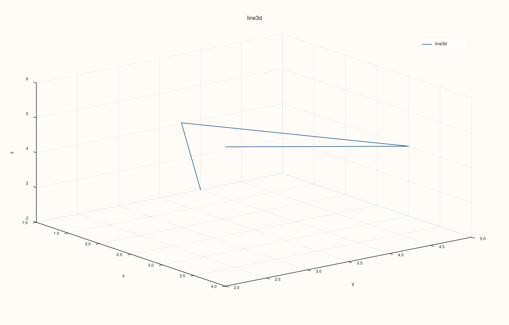
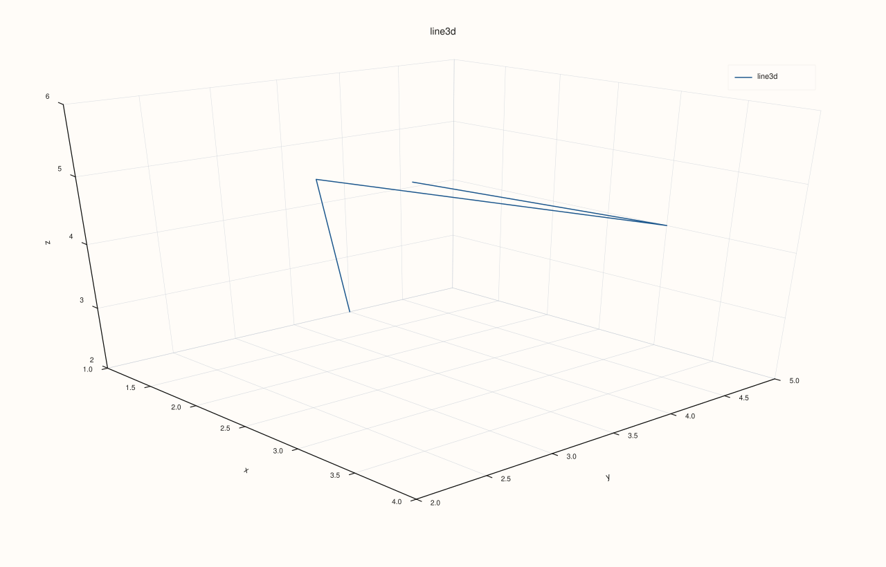
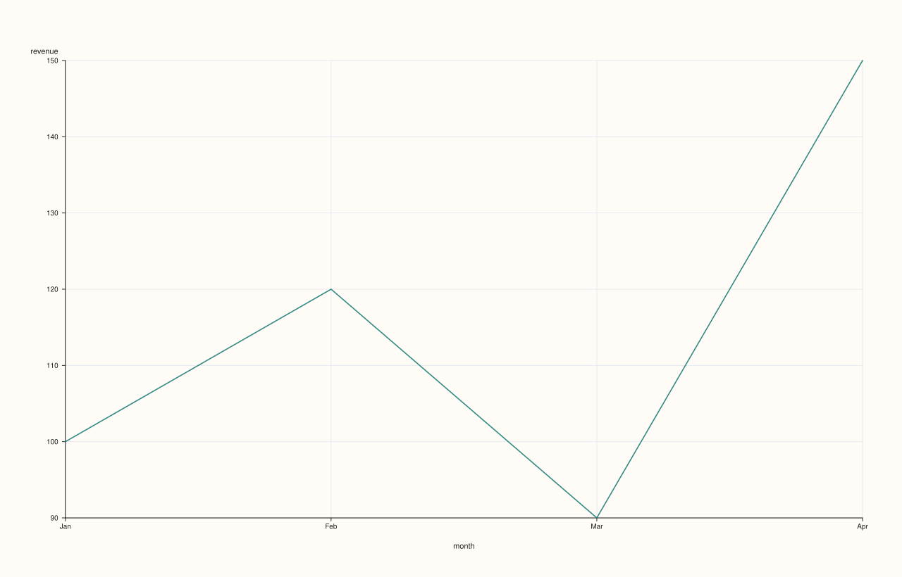
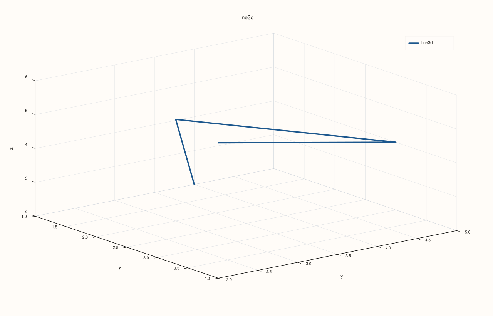
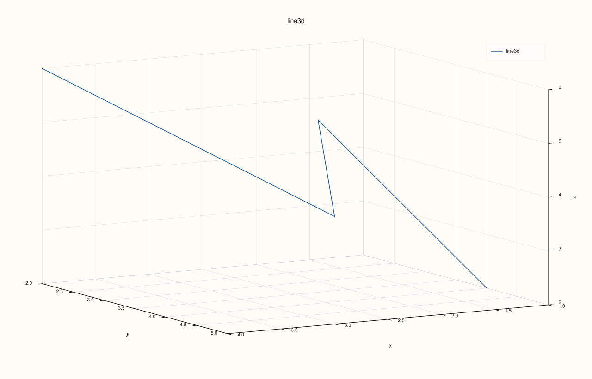
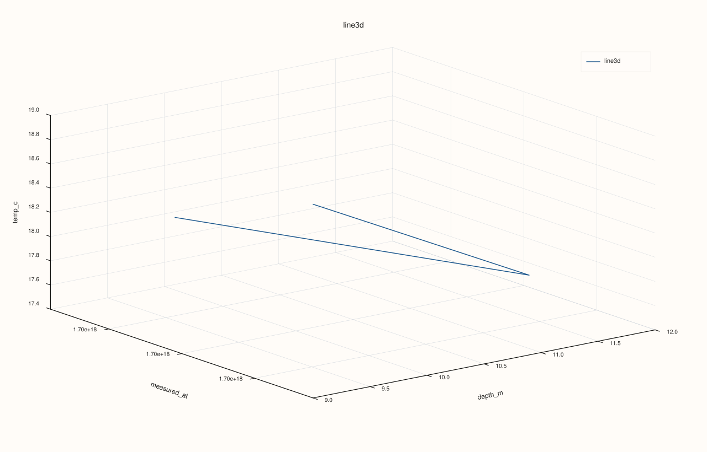

DataFramePlot3DAccessor::line¶
Back to DataFramePlot3DAccessor API Reference
Signature¶
DataFramePlot3DAccessor::line(
std::string_view x_feature,
std::string_view y_feature,
std::string_view z_feature,
const Line3DPlotOptions& options = {}) const -> pluss::pl::Studio
What It Does¶
Draws a single connected 3D path: row i’s (x, y, z) triple becomes point i on the
line, and consecutive rows are joined in frame row order — there is no sorting by any
axis first. This is the 3D counterpart of DataFramePlotAccessor::line,
but every axis here is an explicit, required feature; there is no x-axis-resolution fallback
to row labels the way the 2D accessor has.
This page also establishes mechanics shared by every method on
DataFramePlot3DAccessor — scatter(), hist(),
surface(), and wireframe() all work the same way with
respect to Studio, feature-to-axis conversion, and the two 3D options structs described
below.
Important
Every method returns a Studio, same as the 2D accessor
Nothing is drawn to the console. Every method on DataFramePlot3DAccessor builds and
returns a pluss::pl::Studio, exactly like every method on the 2D
DataFramePlotAccessor — Studio has no operator<<, so
std::cout << chart does not compile. Call .show(), .save_svg(path),
.save_png(path), .save_pdf(path), .to_svg(), or .to_pdf() to actually view or
persist the figure. Every example on this page ends with one of these calls instead of a
std::cout block.
Note
How a feature becomes a numeric axis value
Every 3D method resolves each named feature to a plain double per row before plotting:
a Series-kind feature is used as-is; a Timeline- or TimeIndex-kind feature is
converted to epoch nanoseconds (so a genuine timestamp feature can be used directly as
an x/y/z axis, plotted on a raw nanosecond scale); a Note-kind feature is cast to
Series (a text-to-number parse, which produces NaN for text that doesn’t parse as a
number rather than throwing outright). Any other Thread kind throws "DataFrame::plot: unsupported Thread kind for numeric plotting". A resolved axis whose length doesn’t match
the frame’s row count throws "DataFrame::plot: feature '<name>' length mismatch with cases" — note this shared low-level check’s message always says "DataFrame::plot", even
when it fires from a plot3d() call.
Parameters¶
x_feature, y_feature, z_feature (std::string_view, all required)
The three features providing each row’s x, y, and z coordinate — see the note
above for how each is converted to a numeric value. Unlike the 2D accessor’s x_feature
arguments, none of these are optional and there is no frame-row-label fallback.
options (Line3DPlotOptions)
cpp struct Line3DPlotOptions { Plot3DSceneOptions scene{}; Plot3DTraceOptions trace{}; XYAlignOptions align{XYAlignMode::Inner, XYAlignBy::Auto, 0.0}; };
scene controls the 3D pane’s camera, lighting, theme, and grid style; trace
controls the drawn line’s shading, lighting response, material, stroke width, and
transparency. Both are described in full below, since every method on this accessor
shares the exact same two structs. align is present for the same
struct-reuse-with-Catalog::plot3d() reason as
scatter()’s — inert on DataFramePlot3DAccessor::line() itself.
```cpp
enum class ScenePreset3D { Survey, Presentation, Studio, Topology };
enum class ThemePreset3D { Paper, Ocean, Slate, Mist };
enum class CameraPreset3D { Spatial, TopDown, Front, Side, Isometric };
enum class ProjectionKind { Perspective, Orthographic };
struct Camera3DOptions {
double azimuth_deg{-37.5};
double elevation_deg{30.0};
double view_angle_deg{30.0};
ProjectionKind projection{ProjectionKind::Orthographic};
};
struct Lighting3DOptions {
bool clear_first{true};
bool headlight{true};
bool lamp_left{false};
bool lamp_right{false};
bool sun_key{false};
};
struct Plot3DSceneOptions {
std::optional<ScenePreset3D> preset{std::nullopt};
std::optional<ThemePreset3D> theme{std::nullopt};
std::optional<CameraPreset3D> camera_preset{std::nullopt};
std::optional<Camera3DOptions> camera{std::nullopt};
std::optional<Lighting3DOptions> lighting{std::nullopt};
std::optional<pluss::pl::GridStyle> grid_style{std::nullopt};
};
```
Every field in `Plot3DSceneOptions` is a `std::optional` that defaults to
`std::nullopt`, meaning "leave the pane's built-in default alone." When several
fields *are* set, they're applied in a fixed order, each one layering on top of
(and able to override) whatever came before: **`preset`** first (a scribble that sets
a theme, grid style, camera angle, and a lighting rig all at once — see the preset
table below), then **`theme`** (overrides just the color theme), then
**`grid_style`** (`None`, `Major`, or `MajorMinor`), then **`camera_preset`**
(overrides just the camera angle), then **`camera`** (an explicit
`Camera3DOptions`, overriding any preset's angle with exact numbers), then
**`lighting`** (an explicit `Lighting3DOptions`, overriding any preset's lights).
Setting both `camera_preset` and `camera` is legal — `camera` applies last and wins.
| `ScenePreset3D` | Theme | Camera | Lighting |
|---|---|---|---|
| `Survey` | Ocean | Isometric | headlight + left lamp |
| `Presentation` | Paper | perspective, low/wide angle | headlight + right lamp + sun key |
| `Studio` | Slate | Spatial (the library-wide default angle) | headlight + both lamps |
| `Topology` | Mist | TopDown | headlight only |
```cpp
enum class TracePreset3D { Path, Cloud, Surface, Wireframe, Spire, Volume };
enum class ShadeMode { Faceted, Flat, Smooth };
enum class LightingMode { None, Flat, Gouraud };
enum class MaterialProfile { Default, Dull, Shiny, Metal };
struct Plot3DTraceOptions {
std::optional<TracePreset3D> preset{std::nullopt};
std::optional<ShadeMode> shade{std::nullopt};
std::optional<LightingMode> lighting{std::nullopt};
std::optional<MaterialProfile> material{std::nullopt};
std::optional<float> line_width{std::nullopt};
std::optional<bool> transparent{std::nullopt};
};
```
Same layering rule as `Plot3DSceneOptions`: **`preset`** applies first (a scribble of
shade/lighting/material/width/transparency tuned for one trace shape — `Path` is
tuned for line traces, `Cloud` for scatter, `Surface` for filled meshes,
`Wireframe` for mesh edges, `Spire` for 3D-bar histograms, `Volume` for
translucent solids), then any explicitly-set `shade`, `lighting`, `material`,
`line_width`, or `transparent` fields override just that one aspect of the preset.
None of `line()`'s example calls below set a `preset`, so the pane/trace defaults
(not any preset's values) are what's actually drawn unless noted otherwise.
Returns¶
pluss::pl::Studio
A figure with one 3D pane containing a single connected line trace through the n
(x, y, z) points, in row order.
Examples¶
Example 1. Default options: a simple 3D path.
using namespace pluss::table;
auto points = DataFrame({
{"x", Thread(pluss::make_series({1.0, 2.0, 3.0, 4.0}))},
{"y", Thread(pluss::make_series({4.0, 3.0, 5.0, 2.0}))},
{"z", Thread(pluss::make_series({2.0, 5.0, 4.0, 6.0}))},
});
auto chart = points.plot3d().line("x", "y", "z");
chart.save_svg("path3d.svg");
Four points are connected in row order: (1,4,2) → (2,3,5) → (3,5,4) → (4,2,6) — not
sorted by x or any other axis first.

Example 2. A Line3DPlotOptions with a scene preset for a presentation-style camera and
theme.
Line3DPlotOptions options;
options.scene.preset = pluss::pl::flash::ScenePreset3D::Presentation;
auto chart = points.plot3d().line("x", "y", "z", options);
chart.show();

Example 3. Overriding just the camera angle with an explicit Camera3DOptions, leaving
the theme and lighting at their pane defaults.
Line3DPlotOptions options;
options.scene.camera = pluss::pl::flash::Camera3DOptions{
.azimuth_deg = 20.0,
.elevation_deg = 45.0,
.view_angle_deg = 25.0,
.projection = pluss::pl::ProjectionKind::Perspective,
};
auto chart = points.plot3d().line("x", "y", "z", options);
chart.show();

Example 4. A trace preset (Path, tuned for line traces) combined with an explicit
line_width override — the preset sets shading/lighting/material/width, and the explicit
line_width then overrides just that one field.
Line3DPlotOptions options;
options.trace.preset = pluss::pl::flash::TracePreset3D::Path;
options.trace.line_width = 3.5F;
auto chart = points.plot3d().line("x", "y", "z", options);
chart.save_pdf("path3d_styled.pdf");

Example 5. Both a camera_preset and an explicit camera set together — the explicit
camera applies last and wins, since it’s later in the fixed layering order.
Line3DPlotOptions options;
options.scene.camera_preset = pluss::pl::flash::CameraPreset3D::TopDown;
options.scene.camera = pluss::pl::flash::Camera3DOptions{.azimuth_deg = 60.0, .elevation_deg = 15.0};
auto chart = points.plot3d().line("x", "y", "z", options);
The final camera angle is (azimuth = 60.0, elevation = 15.0) from the explicit camera
field — the TopDown preset’s (0.0, 90.0) angle is set first, then immediately
overridden.

Example 6. A Timeline feature used directly as an axis — converted to epoch
nanoseconds, per the note above.
auto readings = DataFrame({
{"measured_at", Thread(pluss::make_timeline({"2024-01-01T00:00:00Z", "2024-01-02T00:00:00Z", "2024-01-03T00:00:00Z"}))},
{"depth_m", Thread(pluss::make_series({10.0, 12.0, 9.0}))},
{"temp_c", Thread(pluss::make_series({18.0, 17.5, 19.0}))},
});
auto chart = readings.plot3d().line("measured_at", "depth_m", "temp_c");
measured_at’s x coordinates are its epoch-nanosecond values — a very large numeric
range compared to depth_m/temp_c, so the pane’s own auto-scaling handles the disparity;
this call does not reformat the x-axis into calendar tick labels the way the 2D accessor’s
Timeline-aware axis labeling does.

Notes¶
Every axis argument is required — there is no optional-argument or row-label fallback here, unlike
DataFramePlotAccessor::line’sx_feature.Points are connected strictly in frame row order, never sorted by any axis.
Plot3DSceneOptionsandPlot3DTraceOptionsboth apply their fields in a fixed preset-then-explicit-override order — see the callouts above; this same layering rule applies to every method on this accessor.A
Timeline/TimeIndexfeature used as an axis is converted to epoch nanoseconds, not calendar-aware tick labels.Returns a
pluss::pl::Studio— see the important callout above for how to view or save the result.
See Also¶
DataFramePlotAccessor::line: the 2D counterpart, with optional x-axis resolution and row-label fallback this method doesn’t have.DataFramePlot3DAccessor::scatter: unconnected 3D points instead of a connected path, with optional size/color encoding.DataFrame::plot3d: how to enter this accessor.